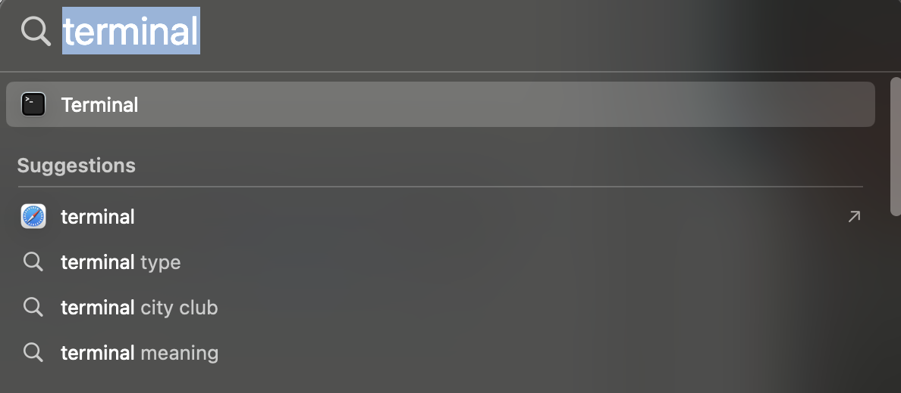

Installation instruction for macOS#
Attribution
This installation guide was adapted from the UBC MDS installation guide
Installation notes#
In all the sections below, if you are presented with the choice to download either a 64-bit (also called x64) or a 32-bit (also called x86) version of the application always choose the 64-bit version.
Important Mac computers are transitioning from Intel processors to Apple silicon. If you have a new laptop (Mac M1 or Mac M2) for some software you will have to use a different installer than Macs with Intel processors.
Once you have completed these installation instructions, make sure to follow the post-installation notes at the end to check that all software is setup correctly.
Bash shell#
Apple recently changed the Mac default shell in the Terminal to Zsh, however, we aim to teach with the same shell across all three operating systems we support, which is the Bash shell. Thus, we ask that you change the default shell in your Terminal to Bash by opening the Terminal and typing:

chsh -s /bin/bash
You will have to quit all instances of open Terminals and then restart the Terminal for this to take effect.
Visual Studio Code#
Installing#
The open-source text editor Visual Studio Code (VS Code) is both a powerful text editor and a full-blown Python IDE, which we will use for more complex analysis. You can download and install the macOS version of VS Code from the VS code website https://code.visualstudio.com/download.
Pay attention here if you have to download the “Intel Chip” or “Apple silicon” installer.
Once the download is finished, click “Open with Archive utility”, and move the extracted VS Code application from “Downloads” to “Applications”. In addition to reading the getting started instructions, be sure to follow the “Launching from the command line” steps as well.
You can test that VS code is installed and can be opened from Terminal by restarting terminal and typing the following command:
code --version
you should see something like this if you were successful:
1.81.1
5763d909d5f12fe19f215cbfdd29a91c0fa9208a
arm64
Note: If you get an error message such as
-bash: code: command not found, but you can see the VS Code application has been installed, then something went wrong with setting up the launch from the command line. Try following these instructions again, in particular you might want to try the described manual method of adding VS Code to your path.
GitHub#
GitHub.com#
Sign up for a free account at GitHub.com if you don’t have one already.
Git#
We will be using the command line version of Git as well as Git through RStudio and JupyterLab. Some of the Git commands we will use are only available since Git 2.23, so if your Git is older than this version, we ask you to update it using the Xcode command line tools (not all of Xcode), which includes Git.
Open Terminal and type the following command to install Xcode command line tools:
xcode-select --install
After installation, in terminal type the following to ask for the version:
git --version
you should see something like this (does not have to be the exact same version) if you were successful:
git version 2.39.2 (Apple Git-143)
Note: If you run into trouble, please see that Install Git > Mac OS section from Happy Git and GitHub for the useR for additional help or strategies for Git installation.
Configuring Git user info#
Next, we need to configure Git by telling it your name and email. To do this type the following into the terminal (replacing Jane Doe and janedoe@example.com, with your name and email (the same used to sign up for GitHub), respectively):
git config --global user.name "Jane Doe"
git config --global user.email janedoe@example.com
Note: To ensure that you haven’t made a typo in any of the above, you can view your global Git configurations by either opening the configuration file in a text editor (e.g. via the command
code ~/.gitconfig) or by typinggit config --list --global.
Setting VS Code as the default editor#
To make programs run from the terminal (such as git) use vscode by default, we will modify ~/.bash_profile. First, open it using VS Code (this will also create the file if it doesn’t already exist):
code ~/.bash_profile
Note: If you see any existing lines in your
~/.bash_profilerelated to a previous Python or R installation, please remove these.
Now append the following lines to ~/.bash_profile:
# Set the default editor for programs launch from terminal
EDITOR="code --wait"
VISUAL=$EDITOR # Use the same value as for "EDITOR" in the line above
Then save the file and exit VS Code.
Note: Most terminal programs will read the
EDITORenvironmental variable when determining which editor to use, but some readVISUAL, so we’re setting both to the same value.
In some cases, VScode is not set as the default text editor for git even after appending the two lines above, so to make sure it is registered properly, also run the following from your terminal:
git config --global core.editor "code --wait"
On MacOS,
VScode sometimes reads a different configuration file than your other programs.
To avoid this,
open your ~/.bashrc file:
code ~/.bashrc
And append the following lines:
# Do NOT add anything to this file, use `~/.bash_profile` instead.
# The next line automatically loads your `~/.bash_profile`
# any time a program tries to read your `~/.bashrc` file.
if [ -f ~/.bash_profile ]; then . ~/.bash_profile; fi
The comment is a reminder to your future self who might open up this file a few months from now =)
Python, Conda, and JupyterLab#
Python and Conda#
We will be using Python for a large part of the program, and conda as our Python package manager. To install Python and the conda package manager, we will use the Miniforge platform (read more here).
Select the appropriate link:
You can find the Mac ARM and Intel download links here: https://conda-forge.org/miniforge/.
Make sure you use the Miniforge3 installers, not the other ones listed.
We will assume you downloaded the file into your Downloads folder.
Once downloaded, open up a terminal and run the following command
bash ${HOME}/Downloads/Miniforge3.sh -b -p "${HOME}/miniforge3"
After installation run the following commands
source "${HOME}/miniforge3/etc/profile.d/conda.sh"
conda activate
conda init
After installation, restart the terminal. If the installation was successful, you will see (base) prepending to your prompt string. To confirm that conda is working, you can ask it which version was installed:
conda --version
which should return something like this:
conda 23.5.2
Note: If you see
zsh: command not found: conda, see the section on Bash{:target=”_self”} above to set your default Terminal shell to Bash as opposed to Zsh.
Next, type the following to ask for the version of Python:
python --version
Make sure it returns Python 3.11.0 or greater:
Python 3.11.4
If you do not see Python >3.11, close your terminal and open a new one.
Confirm that you are in the (base) environment.
Then update the base python with:
conda install python=3.11
Installing Python packages#
conda installs Python packages from different online repositories which are called “channels”.
A package needs to go through thorough testing before it is included in the default channel,
which is good for stability,
but also means that new versions will be delayed and fewer packages are available overall.
There is a community-driven effort called the conda-forge (read more here),
which provides more up to date packages.
Conda-forge is already set up when we installed Miniforge3
To install packages individually,
we can now use the following command:
conda install <package-name>.
After running that command
conda will show you the packages that will be downloaded,
and you can press enter to proceed with the installation.
If you want to answer yes by default and skip this confirmation step,
you can replace conda install with conda install -y.
Also note that we may occasionally need to install packages using pip, the standard Python package manager. The installation command is very similar to that of conda: pip install <package-name>.
In the next session
we will use conda to install
some of the key packages we will use.
JupyterLab setup#
We will be using JupyterLab as our main coding environment
and pandas is one of the key data analyses packages .
The Jupytext Python package and the JupyterLab git extension facilitates
using notebooks in JupyterLab together with Git & GitHub.
The spellchecker helps us correcting typos in our writing.
Install them via the following commands:
conda install pandas jupyterlab jupyterlab-git jupyterlab-spellchecker
We will grade part of your assignments using the Otter-Grader package. For your Jupyter-based assignments, you need to install Otter-Grader using the following command:
pip install otter-grader
To test that your JupyterLab installation is functional, you can type jupyter lab into a terminal,
which should open a new tab in your default browser with the JupyterLab interface.
To exit out of JupyterLab you can click File -> Shutdown,
or go to the terminal from which you launched JupyterLab and hold Ctrl while pressing c twice.
VS Code extensions#
The real magic of VS Code is in the extensions that let you add languages, debuggers, and tools to your installation to support your specific workflow. Now that we have installed all our other Data Science tools, we can install the VS Code extensions that work really well with them. From within VS Code you can open up the Extension Marketplace (read more here) to browse and install extensions by clicking on the Extensions icon in the Activity Bar indicated in the figure below.
To install an extension, go to View -> Extensions or click in the icon as you can see in the image above. Then, search for the names of the ones you are interested in the search bar, click the extension you want, and click “Install”. There are extensions available to make almost any workflow or task you are interested in more efficient! Here we are interested in setting up VS Code as a Python IDE. To do this, search for and install the following extensions:
Python (everything Python: notebooks, debugging, linting, formatting, etc.)
markdownlint (markdown linting and style checking extension)
GitLens - Git supercharged (powerful extension that extends VS Code’s native git capabilities)
Git History (intutive view of your git history)
(Optional) Material Theme and/or Predawn Theme Kit (additional colour themes to choose from)
(Optional) Material Icon Theme (great-looking custom file icons!)
This video tutorial is an excellent introduction to using VS Code in Python.